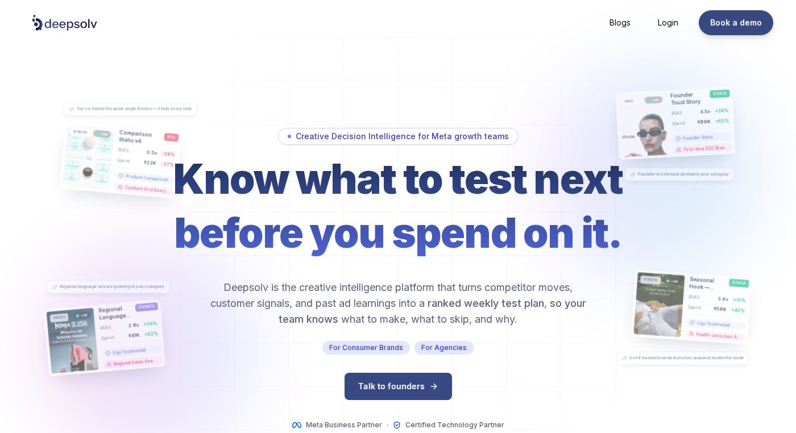

DeepSolv Review: The Creative Intelligence Platform Turning Guesswork Into a Ranked Test Plan
Built by Flipkart alumni who've already taken one startup to a successful exit, DeepSolv's AI system — Adam — helps performance marketing teams at 500+ brands know exactly which Meta ad to test next, and why.

DeepSolv solves a problem every performance marketer knows well: you can see that an ad is winning or losing, but rarely why. Its AI system, Adam, pulls together competitor activity, customer signals, and a brand's own historical ad performance to explain what's working, why it's working, and what to test next — turning a scattered creative process into a prioritised, execution-ready plan. It's already trusted by 500+ brands and agencies, including recognisable D2C names like Pilgrim, mCaffeine's Ghar, and Hair Originals.
Deepsolv rating breakdown
| Factor | Rating | Why |
|---|---|---|
| Founder credibility | 4.8/5 | Built by Flipkart alumni; co-founder Sachit Sharma previously built and exited Sign3.ai. |
| Product depth | 4.6/5 | Competitor tracking, hook/format analysis, customer-signal analysis, and ranked test ideas — not just a dashboard of stats. |
| Ease of entry | 4.5/5 | A free Attention Heatmap tool and a 7-day free trial mean you can see real value before committing. |
| Client traction | 4.5/5 | 500+ brands and agencies, with named case studies showing measurable creative-testing wins. |
Performance marketing, growth, and creative teams running Meta ads at scale — and agencies that need to manage creative intelligence across multiple client accounts at once.
What Is DeepSolv?
DeepSolv is a creative intelligence platform built around Adam, an AI system designed to do the thinking that performance marketers usually have to do by hand: watching what competitors are running, reading customer signals like comments and reviews, and cross-referencing a brand's own ad history to figure out what's actually driving results. Instead of leaving a creative team to guess at their next test, Adam turns all of that into a ranked, prioritised list of test ideas — complete with execution-ready briefs — so teams can move from scattered data to clear decisions.
The company was founded in 2023 by Sachit Sharma and Purby Lohia, both Flipkart alumni. Sachit's path to DeepSolv is a genuinely compelling one: he'd already built and exited a prior startup, Sign3.ai, which reached roughly $500K in ARR before its acquisition. DeepSolv itself started by helping D2C brands manage the explosive engagement — comments, DMs, and social conversations — that comes with running successful campaigns, and has since evolved into a full creative intelligence platform focused on Meta ads, after enterprise customers made clear they'd pay for exactly this kind of deeper, ad-performance-focused intelligence. That evolution has taken the company all the way up to landing one of the world's leading marketing agencies as a customer. Today, DeepSolv runs as a lean, focused team of around a dozen people out of India, with an active funding round underway to support its next phase of growth.
What Adam Actually Does
Adam is built around four core capabilities, all aimed at the same goal: telling creative and growth teams exactly what to do next, not just what already happened.
A ranked weekly test plan
Instead of an open-ended backlog of creative ideas, Adam prioritises what to test next based on real signal, so teams spend their production time on the ideas most likely to move the needle.
Creative performance reasoning
Adam doesn't just report that an ad is winning or losing; it explains the why behind the performance, connecting results back to specific hooks, formats, and angles.
Audience-driven angles
Recommendations are shaped by what a brand's actual customers are responding to, not just generic best practices.
Kill/stop signals
Just as important as knowing what to test next is knowing what to stop spending on, and Adam flags underperforming creative early.
Underpinning all of this is what DeepSolv calls its Brand Brain — a growing, structured understanding of a brand's own creative history, competitors, and customer signals that gets sharper the longer Adam is in use. For teams who want a taste of this before committing to a full platform, DeepSolv also offers a free Attention Heatmap tool that visualises where viewers' eyes are drawn in an ad creative, plus a 7-day free trial of the full platform.
Results That Back It Up
DeepSolv's case studies show the platform working in real, specific scenarios rather than abstract claims. The haircare brand Hair Originals used DeepSolv to bring structure to its Meta ad creative testing — moving from ad-hoc experimentation to a data-backed process for deciding what to produce next. In another case study, DeepSolv documents how a lean three-person marketing team was able to run a creative testing operation that would typically require a much larger team, by leaning on Adam to do the heavy lifting of analysis and prioritisation.
That efficiency story is echoed at the top end of DeepSolv's client base too: the platform has been trusted by one of the world's leading marketing agencies to bring creative intelligence to campaigns run across multiple client accounts — a strong signal for any agency evaluating whether DeepSolv can handle real scale, not just single-brand use cases. As with any vendor-published case study, treat the specific figures as directional rather than independently audited, but the range of brands citing similar outcomes is a reasonable proxy for real traction.
Who's Using It
DeepSolv's client roster spans some of India's most recognisable D2C brands, including Pilgrim, Ghar (by mCaffeine), The Pant Project, Hair Originals, and NexTen Brands — part of a base of 500+ brands and agencies now running their Meta ad creative strategy through the platform. The mix of high-growth D2C names and multi-brand agency accounts reflects the two audiences DeepSolv is explicitly built for: in-house performance and creative teams who need to move faster, and agencies who need one system to manage creative intelligence across every client they run.
Who It's Built For
DeepSolv is designed for three distinct kinds of teams, and its own positioning is refreshingly specific about who benefits most. Performance and growth teams get a clearer read on what's actually driving results, so budget and testing decisions are based on evidence rather than gut feel. Creative teams get direction — a ranked plan of what to produce next, backed by reasoning, rather than an open brief with no clear starting point. Agencies get a way to manage creative intelligence and recommendations consistently across multiple client accounts at once, rather than rebuilding the same analysis manually for every brand they serve.
Where DeepSolv Falls Short
No review is complete without the caveats. DeepSolv doesn't publish pricing anywhere on its site — you'll need to book a demo and share ad spend and team size before you know what it costs, which makes it harder to shortlist against competitors up front. It's also purpose-built for Meta advertising specifically; brands running significant budget on Google, TikTok, or programmatic channels will still need separate tooling for those. And as a newer entrant, DeepSolv doesn't yet have a public track record on review platforms like G2 or Capterra, so independent, at-scale validation is still thinner than the case studies alone suggest.
Frequently asked questions
What is DeepSolv?
DeepSolv is a creative intelligence platform for Meta ads, built around an AI system called Adam that analyses competitor activity, customer signals, and a brand's own ad performance to recommend what to test next.
Who founded DeepSolv?
Sachit Sharma and Purby Lohia, both Flipkart alumni, founded DeepSolv in 2023. Sachit previously built and exited another startup, Sign3.ai.
Who is DeepSolv built for?
Performance marketing, growth, and creative teams running Meta ads at scale, as well as agencies managing creative strategy across multiple client accounts.
Can I try DeepSolv before committing?
Yes — DeepSolv offers a free Attention Heatmap tool to test immediately, plus a 7-day free trial of the full platform.
Does DeepSolv work for agencies managing multiple brands?
Yes — it's explicitly built to help agencies manage creative intelligence and recommendations across multiple client accounts from one place, and it's already used by one of the world's leading marketing agencies.
How much does DeepSolv cost?
DeepSolv doesn't publish pricing. The company demos the product and quotes based on ad spend and team size, and there's no self-serve free plan — only the free Attention Heatmap tool and the 7-day trial.
How is DeepSolv different from a standard ad-analytics dashboard?
Rather than just reporting metrics, Adam explains the reasoning behind creative performance and turns that into a ranked, execution-ready test plan — moving teams from data to decisions rather than leaving that translation up to them.
DeepSolv brings a rare combination to the ad-tech space: founders with real prior startup success (a Flipkart pedigree and an exited company behind them), a product that goes beyond dashboards into genuine reasoning and prioritisation, and a client list that already spans hundreds of brands and agencies — including one of the world's largest marketing agencies. For any performance marketing or creative team tired of guessing which ad to test next, DeepSolv's Adam offers a genuinely differentiated way to turn competitor data, customer signals, and past performance into a clear, ranked plan of action.
More brand reviews
Try Deepsolv yourself
Performance marketing, growth, and creative teams running Meta ads at scale — and agencies that need to manage creative intelligence across multiple client accounts at once.
Visit Deepsolv →See the full Deepsolv listing on ToolScout, including pricing and alternatives.